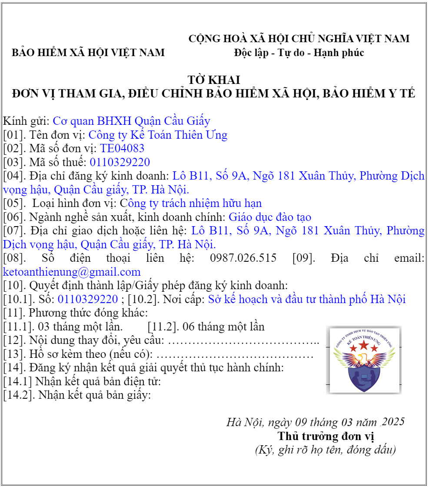

Hướng dẫn viết Mẫu TK3-TS theo Quyết định 490/QĐ-BHXH mới nhất 2025 - Tờ khai đơn vị tham gia BHXH; Cách điền Mẫu TK3-TS chi tiết các chỉ tiêu trên Tờ khai.
------------------------------------------------------------------------------------------------------
HƯỚNG DẪN ĐIỀN Mẫu TK3-TS
Tờ khai đơn vị tham gia, điều chỉnh BHXH, BHYT
a) Mục đích: Tờ khai đơn vị tham gia, điều chỉnh BHXH, BHYT
Kê khai các thông tin của đơn vị khi đăng ký tham gia BHXH, BHYT, BHTN và khi thay đổi thông tin của đơn vị.
b) Trách nhiệm lập:
- Đơn vị tham gia BHXH, BHYT.
c) Thời gian lập:
Đơn vị BHXH, BHYT tham gia lần đầu, đơn vị di chuyển từ địa bàn tỉnh, thành phố khác đến; khi có thay đổi thông tin của đơn vị.
d) Cách ghi Mẫu TK3-TS chi tiết như sau:

----------------------------------------------------------------------------------------
|
BẢO HIỂM XÃ HỘI VIỆT NAM ------------ |
CỘNG HÒA XÃ HỘI CHỦ NGHĨA VIỆT NAM
Độc lập - Tự do - Hạnh phúc
---------------
|
TỜ KHAI
ĐƠN VỊ THAM GIA, ĐIỀU CHỈNH BẢO HIỂM XÃ HỘI, BẢO HIỂM Y TẾ
Kính gửi: .Cơ quan BHXH Quận Cầu giấy.
[01]. Tên đơn vị: ghi đầy đủ tên đơn vị.
[02]. Mã số đơn vị: ghi mã số đơn vị do cơ quan BHXH cấp, trường hợp chưa được cấp mã thì để trống.
[03]. Mã số thuế: ghi mã số thuế của đơn vị, trường hợp đơn vị chưa được cấp mã số thuế thì để trống.
Lưu ý:
- Mã đơn vị lấy theo mã số thuế.
- Đối với đơn vị đã được cấp mã số đơn vị và mã số thuế thì ghi cả hai mã số vào chỉ tiêu tương ứng (đối với đơn vị di chuyển từ địa bàn tỉnh, thành phố khác đến; khi có thay đổi thông tin của đơn vị).
- Trường hợp đơn vị chưa được cấp mã số thuế thì mã đơn vị được cấp theo quy định.
- Trường hợp đã được cấp mã số đơn vị, sau khi được bổ sung mã số thuế thì mã đơn vị được điều chỉnh theo mã số thuế.
[04]. Địa chỉ đăng ký kinh doanh: ghi địa chỉ theo quyết định thành lập, giấy phép kinh doanh.- Mã đơn vị lấy theo mã số thuế.
- Đối với đơn vị đã được cấp mã số đơn vị và mã số thuế thì ghi cả hai mã số vào chỉ tiêu tương ứng (đối với đơn vị di chuyển từ địa bàn tỉnh, thành phố khác đến; khi có thay đổi thông tin của đơn vị).
- Trường hợp đơn vị chưa được cấp mã số thuế thì mã đơn vị được cấp theo quy định.
- Trường hợp đã được cấp mã số đơn vị, sau khi được bổ sung mã số thuế thì mã đơn vị được điều chỉnh theo mã số thuế.
[05]. Loại hình đơn vị: ghi các loại hình đơn vị như: Cơ quan hành chính, Đảng, đoàn; Sự nghiệp công lập; Sự nghiệp ngoài công lập; Doanh nghiệp nhà nước; Doanh nghiệp có vốn đầu tư nước ngoài; Doanh nghiệp ngoài nhà nước (ghi cụ thể như: công ty trách nhiệm hữu hạn, công ty cổ phần, công ty hợp danh và doanh nghiệp tư nhân); Hợp tác xã; Tổ hợp tác; Hộ kinh doanh cá thể; cá nhân có sử dụng lao động; Văn phòng đại diện, tổ chức quốc tế.
[06]. Ngành nghề sản xuất, kinh doanh chính: ghi cụ thể ngành nghề đơn vị sản xuất, kinh doanh chính.
[07]. Địa chỉ giao dich hoặc liên hệ: ghi đầy đủ số nhà, đường phố, thôn xóm; xã, phường, thị trấn; quận, huyện thị xã, thành phố thuộc tỉnh; tỉnh, thành phố nơi đơn vị đóng trụ sở.
[08]. Số điện thoại liên hệ: ghi số điện thoại của đơn vị.
[09]. Địa chỉ email: ghi địa chỉ email của đơn vị.
[10]. Quyết định thành lập/Giấy phép đăng ký kinh doanh:
[10.1].Số: ghi số Quyết định thành lập/Giấy phép đăng ký kinh doanh.
[10.2]. Nơi cấp: ghi cơ quan cấp Quyết định thành lập/Giấy phép đăng ký kinh doanh cho đơn vị.
[10.2]. Nơi cấp: ghi cơ quan cấp Quyết định thành lập/Giấy phép đăng ký kinh doanh cho đơn vị.
[11]. Phương thức đóng khác (chỉ áp dụng đối với Doanh nghiệp, Hợp tác xã, Hộ kinh doanh cá thể, Tổ hợp tác hoạt động trong lĩnh vực nông nghiệp, lâm nghiệp, ngư nghiệp, diêm nghiệp trả lương theo sản phẩm, theo khoán): nếu chọn phương thức đóng 03 tháng một lần thì đánh dấu x với ô [11.1]; nếu chọn phương thức đóng 06 tháng một lần thì đánh dấu x với ô [11.2].
[12]. Nội dung thay đổi, yêu cầu: ghi nội dung yêu cầu thay đổi như: tên đơn vị, địa chỉ đơn vị, loại hình đơn vị...
[13]. Hồ sơ kèm theo: kê chi tiết, số lượng các loại giấy tờ gửi kèm.
[14]. Lựa chọn hình thức nhận kết quả giải quyết thủ tục hành chính (điện tử hoặc giấy)
------------------------------------------------------------------------------------------
Lưu ý:
Khi thay đổi thông tin đơn vị tham gia BHXH, BHYT, BHTN thì chỉ cần ghi mã số thuế đơn vị và chỉ tiêu [01], [02], [10], [11];
Đơn vị chịu trách nhiệm trước pháp luật về việc lập hồ sơ; lưu trữ hồ sơ tham gia BHXH, BHYT, BHTN.
đ) Sau khi hoàn tất việc kê khai, thủ trưởng đơn vị ký, ghi rõ họ tên và đóng dấu.
Khi thay đổi thông tin đơn vị tham gia BHXH, BHYT, BHTN thì chỉ cần ghi mã số thuế đơn vị và chỉ tiêu [01], [02], [10], [11];
Đơn vị chịu trách nhiệm trước pháp luật về việc lập hồ sơ; lưu trữ hồ sơ tham gia BHXH, BHYT, BHTN.
đ) Sau khi hoàn tất việc kê khai, thủ trưởng đơn vị ký, ghi rõ họ tên và đóng dấu.
-------------------------------------------------------------------------------------------------
----------------------------------------------------------------------------------------------------------------
Kế toán Diệu Tâm xin chúc các bạn thành công!